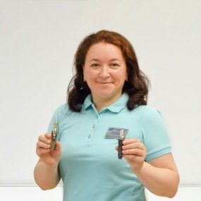

Немного истории
С древних времен человечество пыталось лечить и восстанавливать зубы. В Европе, Африке и Южной Америке ученые обнаружили археологические находки, в числе которых были вставные зубы. Вместо корней и протезов наши предки использовали кости животных и даже зубы своих собратьев. Потребовались сотни лет пока люди научились устанавливать искусственные корни. Стремительное развитие промышленных технологий два столетия назад стало толчком для развития зубной трансплантологии.
Как появилась базальная имплантация
 В 1965 году после изобретения титана и проведения многочисленных опытов с кроликами шведский ученый Бранемарк впервые установил биосовместимый имплантат человеку. Он зафиксировал искусственный корень в костную ткань. Минусом такого способа стало то, что фиксация имплантата была возможна только при достаточном объеме кости, которая убывает спустя 6 месяцев после утраты зуба Инновационный по тем временам способ – базальную имплантацию предложил в 1982 году французский доктор Жан-Марк Жулье. Его имплантат имел форму перевернутой буквы Т и вживлялся в плотный базальный слой кости. Методика помогла многим людям воссоздать утраченные зубы не зависимо от состояния костной ткани.
Что показала практика
После первых удачных операций базальная имплантация активно использовалась в развитых странах. Однако спустя некоторое время пациенты стали жаловаться на боль в зубочелюстном суставе, а также подвижность зубов. После подробного анализа ситуации ведущие клиники мира перестали восстанавливать зубы с помощью базальных имплантатов. Специалисты стали применять новые прогрессивные методики классической имплантации, которые появились в конце 80-х начале 90-х годов прошлого века.
Несколько причин для отказа от базальной имплантации?
Важно знать, что ни одна ассоциация врачей-имплантологов США и Европы не признает эту методику по ряду причин:
- Клинически доказан высокий процент отторжения
- Большая травматичность кости при фиксации имплантата
- При длительной нагрузке конструкция расшатывается
- Возникает подвижность зубов
- Протезы неплотно прилегают к деснам и выглядят неэстетично
- Обычно на базальные имплантаты устанавливаются протезы с искусственной десной из пластмассы. В этом случае
- качественную гигиену проводить достаточно трудно, что может вызвать воспалительный процесс мягких тканей.
Наша позиция
Врачи семейной стоматологии «ДОМОСТОМ» дорожат своей профессиональной репутацией. Поэтому мы не предлагаем восстанавливать зубы с помощью базальной имплантации. Наши опытные специалисты применяют только проверенные и надежные методики, признанные ведущими имплантологами мира. Врачи клиники в курсе всех современных стоматологических разработок и технологий, которые эффективно используют для сохранения вашего здоровья.